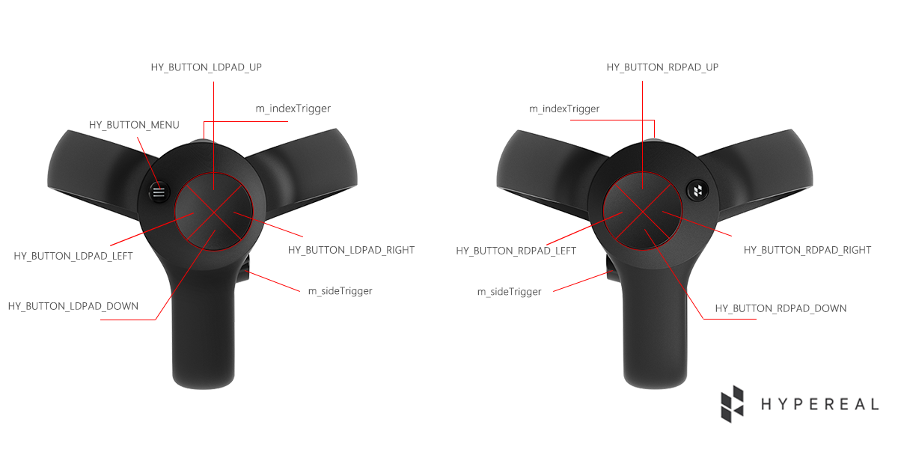
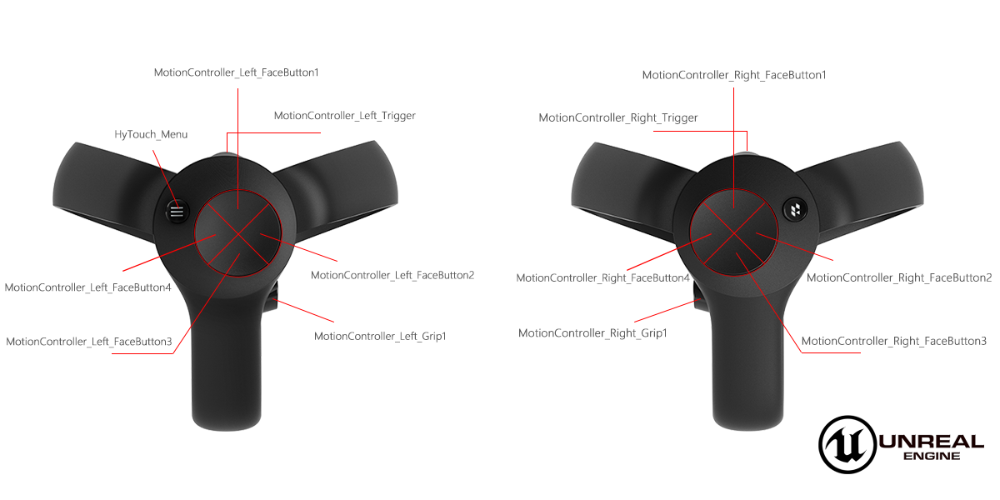

Key Mapping¶
Here inllustrates the values we use in SDK and pluins mapping to a real model. Note: The Home button with Hypereal logo on the right has no event because it is not for developing.
Note: The Home button(on the right touch with Hypereal logo) is not for developers so that there isn't any event for it.
PC SDK¶

Unreal¶
 If you want to get more details between unreal key and SDK value, please read "Unreal Plugin User Guide" --> "Button Mapping".
Unity¶

For Unity, we distinguish left and right controller with L/R labels, you can check the demo for more details.